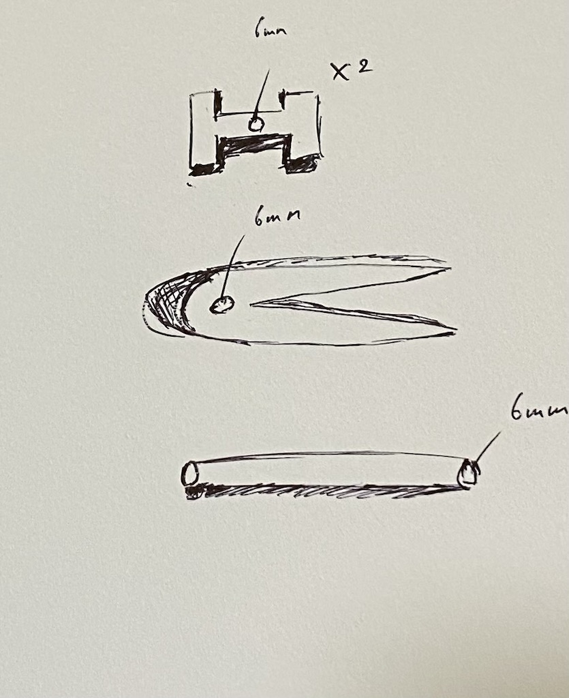
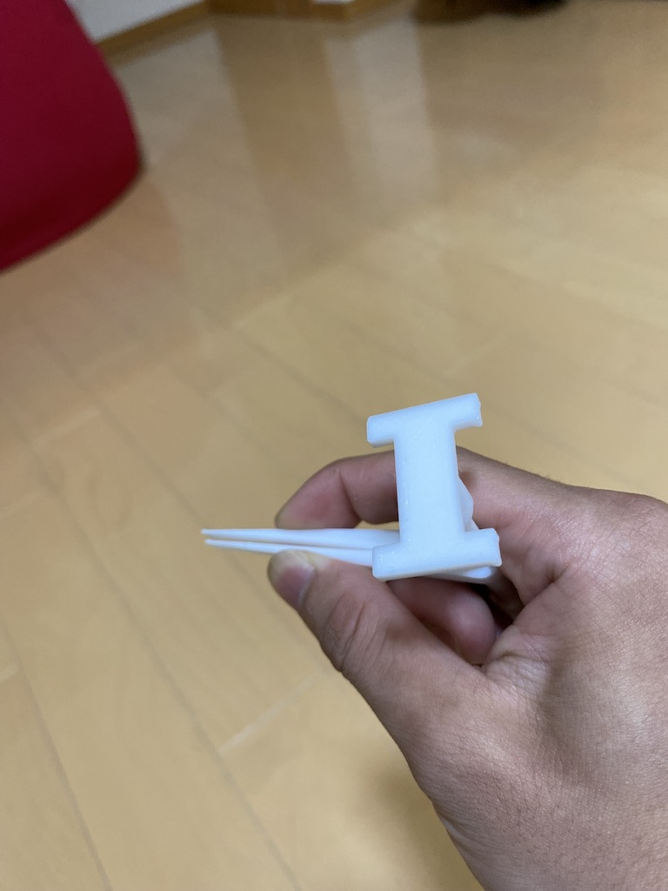

作品名：「スタンド式ピンセット」
スケッチ

設計ファイル
stlファイル1
stlファイル2
stlファイル３
stlファイル４
完成した作品
>
つかんでみた

今回私がなぜこの作品を作るに至った経緯は、ピンセットを置物にすれば無くさずに済むのではないかと考えたからです。
ピンセットは使う機会があまりないので基本引き出しの中で眠っていることが多いと思います。
そのためいざ使おうと思った際に保管場所を忘れてしまいがちです。
上記のことから私はこのようなピンセットを作ろうと思いました
3Dプリンターを今回の授業で初めて使ってみて興味がさらに湧きました。
Fusion360での作図は思っていたより簡単で次回からは応用して良い作品を作ろうと思いました。
3Dプリンターにデータを転送するのには少し苦戦したがなんとかできました。
今回覚えたことを忘れずに復習しておくことが必要だと思いました。